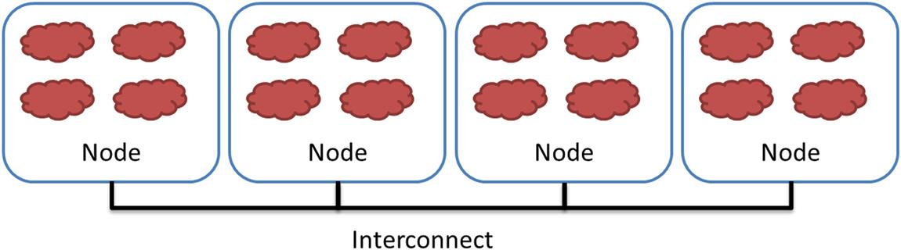
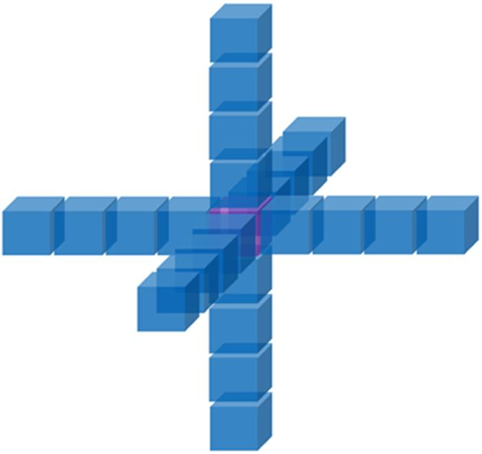
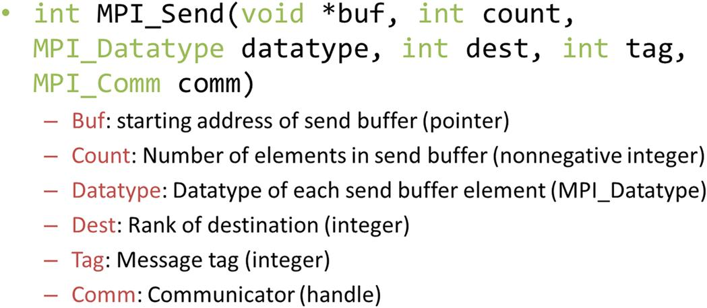
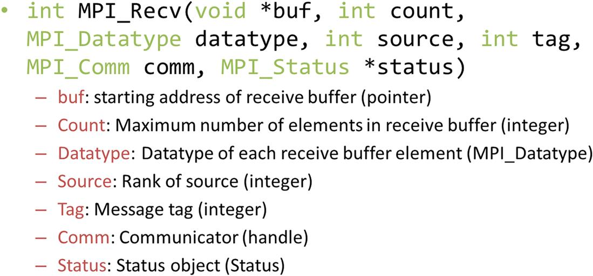
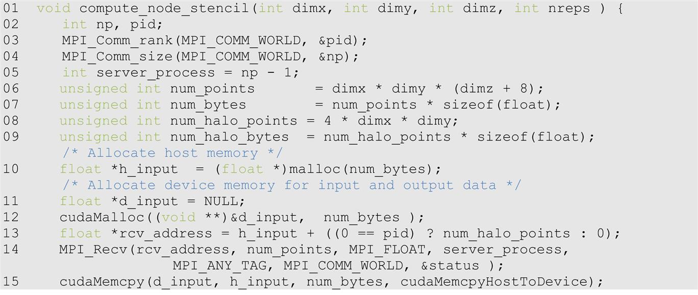
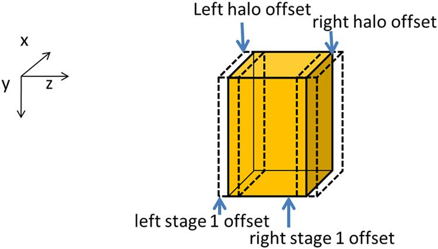
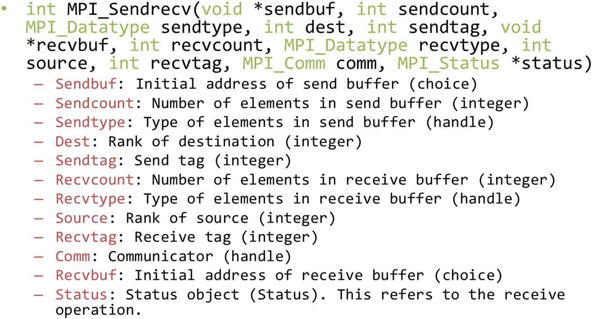
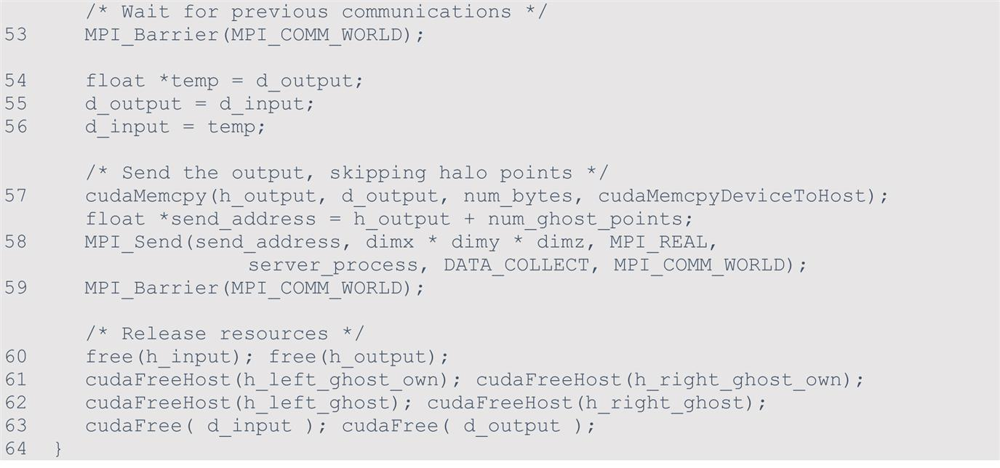
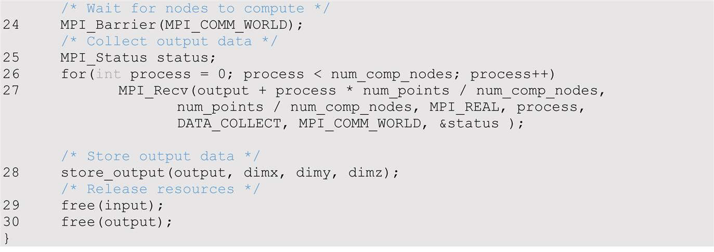
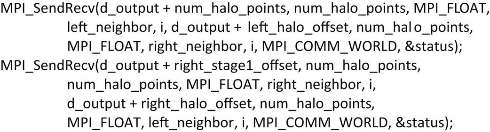

With special contributions from Isaac Gelado and Javier Cabezas
This chapter introduces joint Message Passing Interface (MPI)/CUDA programming using the stencil pattern. It presents a sufficient number of basic MPI concepts for the reader to understand a simple MPI/CUDA program. It then focuses on the practical use of pinned memory and asynchronous data transfers to enable overlapping computation with communication. The chapter ends with an overview of how CUDA-aware MPI systems help to simplify the code and improve efficiency.
MPI; message passing; communication; overlapping communication with computation; asynchronous; domain partition; collective; point-to-point communication; pinned memory; page-locked memory; CUDA streams; barrier
So far, we have focused on programming a heterogeneous computing system with one host and one device. In high-performance computing (HPC), applications require the aggregate computing power of a cluster of computing nodes. Many of the HPC clusters today have one or more hosts and one or more devices in each node. Historically, these clusters have been programmed predominately with Message Passing Interface (MPI). In this chapter we will present an introduction to joint MPI/CUDA programming. We will present only the MPI concepts that programmers need to understand to scale their heterogeneous applications to multiple nodes in a cluster environment. In particular, we will focus on domain partitioning, point-to-point communication, and collective communication in the context of scaling a CUDA kernel into multiple nodes.
Although practically no top supercomputers used GPUs before 2009, the need for better energy efficiency has led to fast adoption of GPUs in recent years. Many of the top supercomputers in the world today use both CPUs and GPUs in each node. The effectiveness of this approach is validated by their high rankings in the Green500 list, which reflects their high energy efficiency.
The dominating programming interface for computing clusters today is MPI (Gropp et al., 1999), which is a set of API functions for communication between processes running in a computing cluster. MPI assumes a distributed memory model in which processes exchange information by sending messages to each other. When an application uses API communication functions, it does not need to deal with the details of the interconnect network. The MPI implementation allows the processes to address each other using logical numbers, in much the same way as using phone numbers in a telephone system: Telephone users can dial each other using phone numbers without knowing exactly where the called person is and how the call is routed.
In a typical MPI application, data and work are partitioned among processes. As is shown in Fig. 20.1, each node can contain one or more processes, shown as clouds within nodes. As these processes progress, they may need data from each other. This need is satisfied by sending and receiving messages. In some cases, the processes also need to synchronize with each other and generate collective results when collaborating on a large task. This is done with collective communication API functions.

As a running example we will use a three-dimensional (3D) stencil computation that was introduced in Chapter 8, Stencil. We assume that the computation calculates heat transfer based on a finite difference method for solving a partial differential equation that describes the physical laws of heat transfer. In particular, we will use the Jacobi iterative method, in which in each iteration or time step, the value of a grid point is calculated as a weighted sum of neighbors (north, east, south, west, up, down) and its own value from the previous time step. To achieve high numerical stability, multiple indirect neighbors in each direction are also used in the computation of a grid point. This is a higher-order stencil computation, as we discussed in Chapter 8, Stencil. For the purpose of this chapter we assume that four points in each direction will be used.
As is shown in Fig. 20.2, there are a total of 24 neighbor points for calculating the next step value of a grid point. Each point in the grid has x, y, and z coordinates. For a grid point where the coordinate value is x = i, y = j, and z = k, or (i, j, k), its 24 neighbors are (i − 4, j, k), (i − 3, j, k), (i − 2, j, k), (i − 1, j, k), (i + 1, j, k), (i + 2, j, k), (i + 3, j, k), (i + 4, j, k), (i, j − 4, k), (i, j − 3, k), (i, j − 2, k), (i, j − 1, k), (i, j + 1, k), (i, j + 2, k), (i, j + 3, k), (i, j + 4, k), (i, j, k − 4), (i, j, k − 3), (i, j, k − 2), (i, j, k − 1), (i, j, k + 1), (i, j, k + 2), (i, j, k + 3) and (i, j, k + 4). Since the data value of each grid point for the next time step is calculated on the basis of the current data values of 25 points (24 neighbors and itself), this is a 25-point stencil computation.

We assume that the system is modeled as a structured grid in which spacing between grid points is constant within each direction. This allows us to use a 3D array in which each element stores the state of a grid point, as we discussed in Chapter 8, Stencil. The physical distance between adjacent elements in each dimension can be represented by a grid spacing variable. Note that this grid data structure is similar to that used in the electrostatic potential calculation in Chapter 18, Electrostatic Potential Map. Fig. 20.3 illustrates a 3D array that represents a rectangular ventilation duct, with x and y dimensions as the cross sections of the duct and the z dimension the direction of the heat flow along the duct.
We assume that the data is placed in the memory space in the row-major layout, where x is the lowest dimension, y is the next, and z is the highest. That is, all elements with y = 0 and z = 0 will be placed in consecutive memory locations according to their x coordinate. Fig. 20.4 shows a small example of the grid data layout. This small example has only 16 data elements in the grid: two elements in the x dimension, two in the y dimension, and four in the z dimension. Both x elements with y = 0 and z = 0 are placed in memory first. They are followed by all elements with y = 1 and z = 0. The next group will be elements with y = 0 and z = 1.
When one uses a computing cluster, it is common to divide the input data into several partitions, called domain partitions, and assign each partition to a node in the cluster. In Fig. 20.3 we show that the 3D array is divided into four domain partitions: D0, D1, D2, and D3. Each of the partitions will be assigned to an MPI compute process.
The domain partitions can be further illustrated with Fig. 20.4. The first section, or slice, of four elements (z = 0) is in the first partition; the second section (z = 1) is in the second partition; the third section (z = 2) is in the third partition; and the fourth section (z = 3) is in the fourth partition. This is obviously a toy example. In a real application there are typically hundreds or even thousands of elements in each dimension. For the rest of this chapter it is useful to remember that all elements in a z slice are in consecutive memory locations.
Like CUDA, MPI programs are based on the SPMD parallel programming model. All MPI processes execute the same program. The MPI system provides a set of API functions to establish communication systems that allow the processes to communicate with each other. Fig. 20.5 shows five essential MPI functions that set up and tear down the communication system for an MPI application.
We will use a simple MPI program, shown in Fig. 20.6, to illustrate the usage the API functions. To launch an MPI application in a cluster, a user needs to supply the executable file of the program to the mpirun command or the mpiexec command in the login node of the cluster. Each process starts by initializing the MPI runtime with an MPI_Init() call (line 05). This initializes the communication system for all the processes that are running the application. Once the MPI runtime has been initialized, each process calls two functions to prepare for communication. The first function is MPI_Comm_rank() (line 06), which returns a unique number to each calling process, which is called the MPI rank or process id for the process. The numbers that are received by the processes vary from 0 to the number of processes minus 1. The MPI rank for a process is analogous to the expression blockIdx.x*blockDim.x+threadIdx.x for a CUDA thread. It uniquely identifies the process in a communication, which is also equivalent to the phone number in a telephone system. The main differences are that MPI ranks are one-dimensional.
The MPI_Comm_rank() function in line 06 of Fig. 20.6 takes two parameters. The first is an MPI built-in type MPI_Comm that specifies the scope of the request, that is, the collection of processes that form the group identified by a MIP_Comm variable. Each variable of the MPI_comm type is commonly referred to as a communicator. MPI_Comm and other MPI built-in types are defined in the “mpi.h” header file (line 01), which should be included in all C program files that use MPI. An MPI application can create one or more communicators, each of which is a group of MPI processes for the purpose of communication. MPI_Comm_rank() assigns a unique id to each process in a communicator. In Fig. 20.6 the parameter value that is passed is MPI_COMM_WORLD, which is used as a default and means that the communicator includes all MPI processes that are running the application.1
The second parameter of the MPI_Comm_rank() function is a pointer to an integer variable into which the function will deposit the returned rank value. In Fig. 20.6 a variable pid is declared for this purpose. After the MPI_Comm_rank() has returned, the pid variable will contain the unique id for the calling process.
The second API function is MPI_Comm_size() (line 07), which returns the total number of MPI processes running in the communicator. The MPI_Comm_size() function takes two parameters. The first one is of MPI_Comm type that gives the scope of the request. In Fig. 20.6 the parameter value that is passed in is MPI_COMM_WORLD, which means that the scope of the MPI_Comm_size() is all the processes in the application. Since the scope is all MPI processes, the returned value is the total number of MPI processes that are running the application. This value is configured by the user when the application is executed by using the mpirun command or the mpiexec command. However, the user may not have requested a sufficient number of processes. Also, the system may or may not be able to create all the processes that the user requested. Therefore it is a good practice for an MPI application program to check the actual number of processes that are running.
The second parameter is a pointer to an integer variable into which the MPI_Comm_size() function will deposit the return value. In Fig. 20.6 a variable np is declared for this purpose. After the function returns, the variable np contains the number of MPI processes that are running the application. In Fig. 20.6 we assume that the application requires at least 3 MPI processes. Therefore it checks whether the number of processes is at least 3 (line 08). If not, it calls MPI_Comm_abort() function to terminate the communication connections and return with an error flag value 1 (line 10).
Fig. 20.6 also shows a common pattern for reporting errors or other chores. There are multiple MPI processes, but we need to report the error only once. The application code designates the process with pid = 0 to do the reporting (line 09). This is similar to the pattern in CUDA kernels in which some tasks need to be done by only one of the threads in a thread-block.
As is shown in Fig. 20.5, the MPI_Comm_abort() function takes two parameters (line 10). The first sets the scope of the request. In Fig. 20.6 the scope is set as MPI_COMM_WORLD, which means all MPI processes that are running the application. The second parameter is a code for the type of error that caused the abort. Any number other than 0 indicates that an error has happened.
If the number of processes satisfies the requirement, the application program goes on to perform the calculation. In Fig. 20.6, the application uses np − 1 processes (pid from 0 to np − 2) to perform the calculation (lines 12–13) and one process (the last one whose pid is np − 1) to perform I/O service for the other processes (lines 14–15). We will refer to the process that performs the I/O services as the data server and the processes that perform the calculation as compute processes. In Fig. 20.6, if the pid of a process is within the range from 0 to np − 2, it is a compute process and calls the compute_process() function (line 13). If the process pid is np − 1, it is the data server and calls the data_server() function (line 15). This is similar to the pattern in which threads perform different actions according to their thread ids.
After the application has completed its computation, it notifies the MPI runtime with a call to MPI_Finalize(), which frees all MPI communication resources that are allocated to the application (line 16). The application can then exit with a return value 0, which indicates that no error has occurred (line 17).
MPI supports two major types of communication. The first is the point-to-point type, which involves one source process and one destination process. The source process calls the MPI_Send() function, and the destination process calls the MPI_Recv() function. This is analogous to a caller dialing a call and a receiver answering a call in a telephone system.
Fig. 20.7 shows the syntax for using the MPI_Send() function. The first parameter is a pointer to the starting location of the memory area where the data to be sent can be found. The second parameter is an integer that gives that number of data elements to be sent. The third parameter is of the MPI built-in type MPI_Datatype. It specifies the type of each data element that is being sent as far as the MPI library implementation is concerned. The values that can be held by a variable or argument of the MPI_Datatype are defined in mpi.h and include MPI_DOUBLE (double-precision floating-point), MPI_FLOAT (single-precision floating-point), MPI_INT (integer), and MPI_CHAR (character). The exact sizes of these types depend on the size of the corresponding C types in the host processor. See the MPI reference manual for more sophisticated use of MPI types (Gropp et al., 1999).

The fourth parameter for MPI_Send() is an integer that gives the MPI rank of the destination process. The fifth parameter gives a tag that can be used to classify the messages that are sent by the same process. The sixth parameter is a communicator that specifies the context in which the destination MPI rank is defined.
Fig. 20.8 shows the syntax for using the MPI_Recv() function. The first parameter is a pointer to the area in memory where the received data should be deposited. The second parameter is an integer that gives the maximum number of elements that the MPI_Recv() function is allowed to receive. The third parameter is an MPI_Datatype that specifies the type of each element to be received. The fourth parameter is an integer that gives the process id of the source of the message. The fifth parameter is an integer that specifies the tag value that is expected by the destination process. If the destination process does not want to be limited to a particular tag value, it can use MPI_ANY_TAG, which means that the receiver is willing to accept messages of any tag value from the source.

We will first use the data server to illustrate the use of point-to-point communication. In a real application the data server process would typically perform data input and output operations for the compute processes. However, input and output have too much system-dependent complexity. Since I/O is not the focus of our discussion, we will avoid the complexity of I/O operations in a cluster environment. That is, instead of reading data from a file system, we will just have the data server initialize the data with random numbers and distribute the data to the compute processes. The first part of the data server code is shown in Fig. 20.9.
The data server function takes four parameters. The first three parameters specify the size of the 3D grid: the number of elements in the x dimension, dimx; the number of elements in the y dimension, dimy; and the number of elements in the z dimension, dimz. The fourth parameter specifies the number of iterations that need to be done for all the data points in the grid.
In Fig. 20.9, line 02 declares variable np that will contain the number of processes running the application. Line 03 calls MPI_Comm_size(), which will deposit the number of processes running the application into np. Line 04 declares and initializes several helper variables. The variable num_comp_procs contains the number of compute processes. Since we are reserving one process as the data server, there are np − 1 compute processes. The variable first_proc gives the process id of the first compute process, which is 0. The variable last_proc gives the process id of the last compute process, which is np − 2. That is, line 04 designates the first np − 1 processes, 0 through np − 2, as compute processes. The process with the largest rank serves as the data server. This reflects the design decision, and this decision will also be reflected in the compute process code.
Line 05 declares and initializes the num_points variable that gives the total number of grid data points to be processed, which is simply the product of the number of elements in each dimension, or dimx * dimy * dimz. Line 06 declares and initializes the num_bytes variable, which gives the total number of bytes needed to store all the grid data points. Since each grid data point is a float, this value is num_points * sizeof(float).
Line 07 declares two pointer variables: input and output. These two pointers will point to the input data buffer and the output data buffer. Lines 08 and 09 allocate memory for the input and output buffers and assign their addresses to their respective pointers. Line 10 checks whether the memory allocations were successful. If either of the memory allocation fails, the corresponding pointer will have received a NULL pointer from the malloc() function. In this case, the code aborts the application and reports an error (lines 11–12).
Lines 15 and 16 calculate the number of grid point array elements that should be sent to each compute process. As is shown in Fig. 20.3, there are two types of compute processes: edge processes and internal processes. The first process (process 0, which computes D1) and the last process (process 3, which computes D4) compute an edge partition that has neighbors only on one side. Partition D1, which is assigned to process 0, has a neighbor only on the right side (D2). Partition D4, which is assigned to the last compute process, has a neighbor only on the left side (D3). We call the compute processes that compute edge partitions the edge processes. Each of the other processes computes an internal partition that has neighbors on both sizes. For example, process 1 computes partition D2, which has a left neighbor (D1) and a right neighbor (D3). We call the processes that compute internal partitions internal processes.
Recall that in the Jacobi iterative method, each calculation step for a grid point needs the values of its immediate neighbors from the previous step. This creates a need for halo cells for grid points at the left and right boundaries of a partition, which are shown as slices defined by dashed lines at the edge of each partition in Fig. 20.3. Note that these halo slices are similar to those in the stencil pattern that was presented in Chapter 8, Stencil. Since we are computing a 25-point stencil with four elements in each direction, each process needs to receive four slices of halo cells that contain all neighbors for each side of the boundary grid points of its partition. For example, in Fig. 20.3, partition D2 needs four halo slices from D1 and four halo slices from D3. Note that a halo slice for D2 is a boundary slice for D1 or D3.
Recall that the total number of grid points is dimx*dimy*dimz. Since we are partitioning the grid along the z dimension, the number of grid points in each partition should be dimx*dimy*(dimz/num_comp_procs). Recall that we will need four neighbor slices in each direction in order to calculate values within each partition. Therefore the number of grid points that should be sent to each internal process is dimx*dimy*((dimz/num_comp_procs) + 8). As for an edge process, there is only one neighbor. As in the case of convolution, we assume that zero values will be used for the ghost cells and that no input data needs to be sent for them. For example, partition D1 needs only the four neighbor slices from D2 on the right side. Therefore the number of grid points to be sent to an edge process is dimx*dimy*((dimz/num_comp_procs) + 4). That is, each process receives four slices of halo grid points from the neighbor partition on each side.
Line 17 of Fig. 20.9 sets the send_address pointer to point to the beginning of the input grid point array. To send the appropriate partition to each process, we will need to add the appropriate offset to this beginning address for each MPI_Send(). We will come back to this point later.
We are now ready to complete the code for the data server. Line 18 sends process 0 its partition. Since this is the first partition, its starting address is also the starting address of the entire grid, which was set up in line 17. Process 0 is an edge process, and it does not have a left neighbor. Therefore the number of grid points to be sent is the value edge_num_points, that is, dimx*dimy*((dimz/num_comp_procs) + 4). The third parameter specifies that the type of each element is an MPI_FLOAT which is C float (single-precision, 4 bytes). The fourth parameter specifies that the value of first_node, that is, 0, is the MPI rank of the destination process. The fifth parameter specifies 0 for the MPI tag. This is because we are not using tags to distinguish between messages sent from the data server. The sixth parameter specifies that the communicator to be used for interpreting the sender and receiver rank values for the message should be all MPI processes for the current application.
Line 19 of Fig. 20.9 advances the send_address pointer to the beginning of the data partition for process 1. From Fig. 20.3 there are dimx*dimy*(dimz/num_comp_procs) elements in partition D1, which means that D2 starts at the location that is dimx*dimy*(dimz/num_comp_procs) elements from the starting location of input. Recall that we also need to send the halo cells from D1. Therefore we adjust the starting address for the MPI_Send() back by four slices, which results in the expression for advancing the send_address pointer in line 19: dimx*dimy*((dimz/num_comp_procs) - 4).
Line 20 is a loop that sends out the MPI messages to the internal processes (process 1 through process np − 3). In our small example for four compute processes, np is 5, so the loop sends the MPI messages to process 1 and process 2. These internal processes need to receive halo grid points for neighbors on both sides. Therefore the second parameter of the MPI_Send() in line 21 uses int_num_nodes, that is, dimx*dimy*((dimz/num_comp_procs) + 8). The rest of the parameters are similar to that for the MPI_Send() in line 18 with the obvious exception that the destination process is specified by the loop variable process, which is incremented from 1 to np − 3 (the last_node is np − 2).
Line 22 advances the send address for each internal process by the number of grid points in each partition: dimx*dimy*dimz/num_comp_nodes. Note that the starting locations of the halo grid points for internal processes are dimx*dimy*dimz/num_comp_procs points apart. Although we need to pull back the starting address by four slices to accommodate halo grid points, we do so for every internal process, so the net distance between the starting locations remains the number of grid points in each partition.
Line 23 sends the data to the process np − 2, the last compute process that has only one neighbor on the left. The reader should be able to reason through all the parameter values that are used. Note that we are not quite done with the data server code. We will come back later for the final part of the data server that collects the output values from all compute processes.
We now turn our attention to the compute processes that receive the input from the data server process. In Fig. 20.10, lines 03–04 establish the process id for the process and the total number of processes for the application. Line 05 establishes that the data server is process np − 1. Lines 06–07 calculate the number of grid points and the number of bytes that should be processed by each internal process. Lines 08–09 calculate the number of grid points and the number of bytes in each halo (4 slices).

Lines 10–12 allocate the host memory and device memory for the input data. Although the edge processes need less halo data, they still allocate the same amount of memory for simplicity; part of the allocated memory will not be used by the edge processes. Line 13 sets the starting address of the host memory for receiving the input data from the data server. For all compute processes except process 0, the starting receiving location is simply the starting location of the allocated memory for the input data. However, for process 0, we adjust the receiving location by four slices. This is because for simplicity we assume that the host memory for receiving the input data is arranged in the same way for all compute processes: four slices of halo elements from the left neighbor followed by the partition, followed by four slices of halo elements from the right neighbor. However, as we showed in line 15 of Fig. 20.9, the data server will not send any halo data from the left neighbor to process 0. That is, for process 0, the MPI message from the data server contains only the partition and the halo from the right neighbor. Therefore line 13 adjusts the starting host memory location by four slices so that process 0 will correctly interpret the input data from the data server.
Line 14 receives the MPI message from the data server. Most of the parameters should be familiar. The last parameter reflects any error condition that has occurred when the data are received. The second parameter specifies that all compute processes will receive the full amount of data from the data server. However, the data server will send less data to process 0 and process np − 2. This is not reflected in the code because MPI_Recv() allows the second parameter to specify a larger number of data points than are actually received and will place only the actual number of bytes received from the sender into the receiving memory. In the case of process 0, the input data from the data server contains only the partition and the halo from the right neighbor. The received input will be placed by skipping the first four slices of the allocated memory, which correspond to the halo for the (nonexistent) left neighbor. This effect is achieved with the term ((0==pid)? num_halo_points: 0) on line 13. In the case of process np − 2, the input data contains the halo from the left neighbor and the partition. The received input will be placed from the beginning of the allocated memory, leaving the last four slices of the allocated memory unused.
Line 15 copies the received input data to the device memory. In the case of process 0, the left halo points are not valid. In the case of process np − 2, the right halo points are not valid. However, for simplicity, all compute nodes send the full size to the device memory. The assumption is that the kernels will be launched in such a way that these invalid portions will be correctly ignored. After line 15, all the input data are in the device memory.
Fig. 20.11 shows part 2 of the compute process code. Lines 16–18 allocate host memory and device memory for the output data. The output data buffer in the device memory will be used with the input data buffer in a double-buffering scheme. That is, they will switch roles in each iteration. We will return to this point and cover the rest of the code in Fig. 20.11 later. We are now ready to present the code that performs computation steps on the grid points.
A simple way to perform the computation steps is for each compute process to perform a computation step on its entire partition, exchange halo data with the left and right neighbors, and repeat. While this is a very simple strategy, it is not very effective. The reason is that this strategy forces the system to be in one of the two modes. In the first mode, all compute processes are performing computation steps. During this time, the communication network is not used. In the second mode, all compute processes are exchanging halo data with their left and right neighbors. During this time, the computation hardware is not well utilized. Ideally, we would like to achieve better performance by utilizing both the communication network and the computation hardware all the time. This can be achieved by dividing the computation tasks of each compute process into two stages, as illustrated in Fig. 20.12.
During the first stage (stage 1), each compute process calculates its boundary slices that will be needed as halo cells by its neighbors in the next iteration. Let’s continue to assume that we use four slices of halo data. Fig. 20.12 shows the four halo slices as a dashed transparent piece and the four boundary slices as a colored piece. Note that the colored piece of process i will be copied into the dashed piece of process I + 1 and the colored piece of process I + 1 will be copied into the dashed piece of process i during the next communication. For process 0, the first phase calculates the right four slices of boundary data. For an internal node it calculates the left four slices and the right four slices of its boundary data. For process n − 2, it calculates the left four pieces of its boundary data. The rationale is that these boundary slices are needed by their neighbors for the next iteration. If these boundary slices are calculated first, the data can be communicated to the neighbors while the compute processes calculate the rest of their internal grid points.
During the second stage (stage 2), each compute process performs two activities in parallel. The first is to communicate its new boundary values to its neighbor processes. This is done by first copying the data from the device memory into the host memory, followed by sending MPI messages to the neighbors. As we will discuss later, we need to be careful that the data that is received from the neighbors is used in the next iteration, not the current iteration. The second activity is to calculate the rest of the data in the partition. If the communication activity takes a shorter amount of time than the calculation activity, we can hide the communication delay and fully utilize the computing hardware all the time. This is usually achieved by having enough slices in the internal part of each partition to allow each compute process to perform enough computation to hide the communication.
To support the parallel activities in stage 2, we need to use two advanced features of the CUDA programming model: pinned memory allocation and streams. A pinned memory allocation requests that the memory that is allocated not be paged out by the operating system. This is done with the cudaHostAlloc() API call. Lines 21–24 in Fig. 20.11 allocate pinned memory buffers for the left and right boundary slices and the left and right halo slices. The left and right boundary slices need to be sent from the device memory to the left and right neighbor processes. The buffers are used as a host memory staging area for the device to copy data into and are then used as the source buffer for MPI_Send() to neighbor processes. The left and right halo slices need to be received from neighbor processes. The buffers are used as a host memory staging area for MPI_Recv() to use as destination buffers and then to copy data from them to the device memory. These buffers are sometimes referred to as bounce buffers, as their main role is to serve as temporary buffers that allow the data to be bounced from the device memory to the remote MPI process and vice versa.
Note that the host memory allocation for the bounce buffers is done with cudaHostAlloc() function rather than the standard malloc() function. The difference is that the cudaHostAlloc() function allocates a pinned memory buffer, sometimes also referred to as page locked memory buffer. We need to know a little more background on the memory management in operating systems in order to fully understand the concept of pinned memory buffers.
In a modern computer system the operating system manages virtual memory spaces for applications. Each application has access to a large, consecutive address space. In reality the system has a limited amount of physical memory that needs to be shared among all running applications. This sharing is performed by partitioning the virtual memory space into pages and mapping only the actively used pages into physical memory. When there is much demand for memory, the operating system needs to page out some of the pages from the physical memory to mass storage such as disks. Therefore an application may have its data paged out at any time during its execution.
The implementation of cudaMemcpy() uses a type of hardware called a direct memory access (DMA) device. When a cudaMemcpy() function is called to copy between the host and device memories, its implementation uses a DMA operation to complete the task. On the host memory side, the DMA hardware operates on physical addresses; that is, the operating system needs to give a translated physical address to the DMA device. However, there is a chance that the data may be paged out before the DMA operation is complete. The physical memory locations for the data may be reassigned to other data corresponding to a different virtual memory location. In this case, the DMA operation can potentially be corrupted, since its data can be overwritten by the paging activity.
A common solution to this data corruption problem is for the CUDA runtime to perform the copy operation in two steps. For a host-to-device copy, the CUDA runtime first copies the source host memory data into a pinned memory buffer, which means that the memory locations are marked so that the paging mechanism will not page out the data. It then uses the DMA device to copy the data from the pinned memory buffer to the device memory. For a device-to-host copy, the CUDA runtime first uses a DMA device to copy the data from the device memory into a pinned memory buffer. It then copies the data from the pinned memory buffer to the destination host memory location. By using an extra pinned memory buffer, the DMA copy will be safe from any paging activities.
There are two problems with this approach. One is that the extra copy adds delay to the cudaMemcpy() operation. The second is that the extra complexity involved leads to a synchronous implementation of the cudaMemcpy() function. That is, the host program cannot continue to execute until the cudaMemcpy() function has completed its operation and returned. This serializes all copy operations. To support fast copies with more parallelism, CUDA provides a cudaMemcpyAsync() function.
The cudaMemcpyAsync() function requires that the host memory buffer be allocated as a pinned memory buffer. This is done in lines 21–24 in Fig. 20.11 for the host memory buffers of the left boundary, right boundary, left halo, and right halo slices. These buffers are allocated with the cudaHostAlloc() function, which ensures that the allocated memory is pinned or page locked from paging activities. Note that the cudaHostAlloc() function takes three parameters. The first two are the same as cudaMalloc(). The third specifies some options for more advanced usage. For most basic use cases, we can simply use the default value cudaHostAllocDefault.
The second advanced CUDA feature that is used for overlapping communication with computation is streams, a feature that supports managed concurrent execution of CUDA API functions. A stream is an ordered sequence of operations. When the host code calls a cudaMemcpyAsync() function or launches a kernel, it can specify a stream as one of its parameters. By specifying a stream in a cudaMemcpyAsync() call, the copy operation is placed into a stream. All operations in the same stream will be done sequentially according to the order in which they are placed into that stream. However, operations in different streams can be executed in parallel without any ordering constraint.
Line 25 of Fig. 20.11 declares two variables that are of CUDA built-in type cudaStream_t. These variables are then used in calling the cudaStreamCreate() function. Each call to cudaStreamCreate() creates a new stream and deposits an identifier of the stream into its parameter. After the calls in lines 26 and 27, the host code can use either stream 0 or stream 1 in subsequent cudaMemcpyAsync() calls and kernel calls.
Fig. 20.13 shows part 3 of the compute process. Line 28 declares an MPI status variable that will be used for MPI send and receive. Lines 29–30 calculate the process id of the left and right neighbors of the compute process. The left_neighbor and right_neighbor variables will be used by compute processes as parameters when they send messages to and receive messages from their neighbors. For process 0, there is no left neighbor, so line 29 assigns an MPI constant MPI_PROC_NULL to left_neighbor to note this fact. For process np − 2, there is no right neighbor, so line 30 assigns MPI_PROC_NULL to right_neighbor. For all the internal processes, lines 29–30 assign pid − 1 to left_neighbor and pid + 1 to right_neighbor.
Line 31 in Fig. 20.13 calls a function to copy the stencil coefficients to the GPU constant memory. The details will not be shown here because the reader should already be familiar with constant memory. Lines 32–36 set up several offsets that will be used to call kernels and exchange data so that the computation and communication can be overlapped. These offsets define the regions of grid points that will need to be calculated at each stage of Fig. 20.13. They are also visualized in Fig. 20.12.
Note that the total number of slices in each device memory is four slices of left halo points (dashed white) plus four slices of left boundary points plus dimx*dimy*(dimz − 8) internal points plus four slices of right boundary points plus four slices of right halo points (dashed white). As illustrated in Fig. 20.14, variable left_stage1_offset defines the starting point of the slices that are needed in order to calculate the left boundary slices. This includes 12 slices of data: four slices of left neighbor halo points, four slices of boundary points, and four slices of internal points. These slices are the leftmost in the partition, so the offset value is set to 0 by line 34. Variable right_stage2_offset defines the starting point of the slices that are needed for calculating the right boundary slices. This also includes 12 slices: four slices of internal points, four slices of right boundary points, and four slices of right halo cells. The beginning point of these 12 slices can be derived by subtracting 12 from the total number of slices dimz + 8. Therefore the starting offset for these 12 slices is set to dimx*dimy*(dimz − 4) by line 35 (Fig. 20.12).

Line 37 in Fig. 20.13 is an MPI barrier synchronization, which is similar to the CUDA __syncthreads() across threads in a block. MPI barrier forces all MPI processes that are specified by the input argument to wait for each other. None of the processes can continue their execution beyond this point until all have reached this point. The reason why we want the barrier synchronization here is to ensure that all compute nodes have received their input data and are ready to perform the computation steps. Since they will be exchanging data with each other, we would like to make them all start at about the same time. Thus we will not be in a situation in which a few tardy processes delay all other processes during the data exchange. MPI_Barrier() is a collective communication function. We will discuss collective communication API functions in more detail in the next section.
Line 38 starts a loop that performs the computation steps. For each iteration, each compute process will perform one cycle of the two-stage process shown in Fig. 20.12. Line 39 calls a function that will generate the four slices of the left boundary points in stage 1. We assume that the function will set up the grid configuration and call the stencil kernel that performs one computation step on a region of grid points as described in Chapter 8, Stencil. The call_stencil_kernel() function takes several parameters. The first parameter is a pointer to the output data area for the kernel. The second parameter is a pointer to the input data area. In both cases, we add the left_stage1_offset to the input and output data in the device memory. The next three parameters specify the dimensions of the portion of the grid to be processed. Note that we need to have four slices on each side in order to correctly perform the computation for all the points in the four left boundary slices. Line 40 does the same for the right boundary points in stage 1. Note that these kernels will be called within stream 0 and will be executed sequentially.
Line 41 calls the call_stencil_kernel() function, which will call a stencil kernel function to generate the dimx*dimy*(dimz − 8) internal points in stage 2. Note that this also requires four slices of input boundary values on each side, so the total number of input slices is dimx*dimy*dimz. The kernel is called in stream 1 and will be executed in parallel with those called by lines 39 and 40.
Fig. 20.15 shows part 4 of the compute process code. Line 42 copies the four slices of left boundary points to the host memory in preparation for data exchange with the left neighbor process. Line 43 copies the four slices of the right boundary points to the host memory in preparation for data exchange with the right neighbor process. Both are asynchronous copies in stream 0 and will wait for the two kernels in stream 0 to complete before they copy data. Line 44 is a synchronization that forces the process to wait for all operations in stream 0 to complete before it can continue. This ensures that the left and right boundary points are in the host memory before the process proceeds with data exchange.
During the data exchange phase, we will have all MPI processes send their boundary slices to their left neighbors. That is, all processes will have their right neighbors sending data to them. It is therefore convenient to have an MPI function that sends data to a destination and receives data from a source. This reduces the number of MPI function calls. The MPI_Sendrecv() function in Fig. 20.16 is such a function. It is a combination of MPI_Send() and MPI_Recv() so we will not elaborate further on the meaning of the parameters.

Line 45 sends four slices of left boundary points to the left neighbor and receives four slices of right halo points from the right neighbors. Line 46 sends four slices of right boundary points to the right neighbor and receives four slices of left halo points from the left neighbor. In the case of process 0, its left_neighbor has been set to MPI_PROC_NULL in line 27, so the MPI runtime will not send out the message in line 45 or receive the message in line 46 for process 0. Likewise, the MPI runtime will not receive the message in line 45 or send out the message in line 46 for process np − 2. Therefore the conditional assignments in lines 29 and 30 of Fig. 20.13 eliminate the need for special if-then-else statements in lines 45 and 46.
After the MPI messages have been sent and received, lines 47 and 48 transfer the newly received halo points to the d_output buffer of device memory. These copies are done in stream 0, so they will execute in parallel with the kernel launched in stream 1 on line 38.
Line 49 is a synchronization operation for all device activities. This call forces the process to wait for all device activities, including kernels and data copies, to complete. When the cudaDeviceSynchronize() function returns, all d_output data from the current computation step are in place: left halo data from the left neighbor process, boundary data from the kernel launched in line 36, internal data from the kernel launched in line 38, right boundary data from the kernel launched in line 37, and right halo data from the right neighbor.
Lines 50 and 51 swap the d_input and d_output pointers. This changes the output of the d_ouput data of the current computation step into the d_input data of the next computation step. The execution then proceeds to the next computation step by going to the next iteration of the loop of line 35. This will continue until all compute processes have completed the number of computations specified by the parameter nreps.
Fig. 20.17 shows part 5, the final part of the compute process code. Line 53 is a barrier synchronization that forces all processes to wait for each other to finish their computation steps. Lines 54–56 swap d_output with d_input. This is because lines 50 and 51 swapped d_output with d_input in preparation for the next computation step. However, this is unnecessary for the last computation step, so we use lines 54–56 to undo the swap. Line 57 copies the final output to the host memory. Line 58 sends the output to the data server. Line 59 waits for all processes to complete. Lines 60–63 free all the resources before returning to the main program.

Fig. 20.18 shows part 2, the final part of the data server code, which continues from Fig. 20.9. Line 24 is a barrier synchronization that waits for all compute nodes to complete their computation steps and send their outputs. This barrier corresponds to the barrier at line 59 of the compute process. Lines 26 and 27 receive the output data from all the compute processes. Line 28 stores the output into an external storage. Finally, lines 29 and 30 free resources before returning to the main program.

We saw an example of the MPI collective communication API in the previous section: MPI_Barrier. The other commonly used group collective communication types are broadcast, reduce, gather, and scatter (Gropp et al., 1999). Barrier synchronization MPI_Barrier() is perhaps the most commonly used collective communication function. As we saw in the stencil example, barriers are used to ensure that all MPI processes are ready before they begin to interact with each other. We will not elaborate on the other types of MPI collective communication functions, but we encourage the reader to read the details of these functions. In general, collective communication functions are highly optimized by the MPI runtime developers and system vendors. Using them usually leads to better performance as well as readability and productivity than trying to achieve the same functionality with combinations of send and receive calls.
Modern MPI implementations are aware of the CUDA programming model and are designed to minimize the communication latency between GPUs. Currently, direct interaction between CUDA and MPI is supported by MVAPICH2, IBM Platform MPI, and OpenMPI.
CUDA-aware MPI implementations are capable of sending messages from the GPU memory in one node to the GPU memory in a different node. This effectively removes the need for device-to-host data transfers before sending MPI messages and host-to-device data transfers after receiving an MPI message. This has the potential to simplify the host code and memory data layout. In our stencil example, if we used a CUDA-aware MPI implementation, we will no longer need host-pinned memory allocations and asynchronous memory copies.
The first simplification is that we no longer need to allocate host-pinned memory buffers to transfer the halo points to the host memory to prepare for MPI_Send(). This means that we can safely remove lines 21–24 in Fig. 20.11. However, we still need to use CUDA streams and two separate GPU kernels to start communicating across nodes as soon as the halo elements have been computed.
The second simplification is that we no longer need to asynchronously copy the halo data from the host to the device memory after MPI_Recv(). As a result, we can also remove lines 42 and 43 in Fig. 20.15. Since the MPI calls now accept device memory addresses, we need to modify the calls to MPI_SendRecv to use them. Note that these memory addresses actually correspond to the device addresses of the asynchronous memory copies in the previous versions. Since the CUDA-aware MPI implementations will directly update the contents of the GPU memory, we also remove lines 47 and 48 in Fig. 20.15. Fig. 20.19 shows the modifications to he MPI_SendRecv statements in lines 45 and 46 in Fig. 20.15, so that they directly read from and write to the device memory.

Besides removing the data transfers during the halo exchange using MPI_SendRecv(), it would also be possible to remove the initial and final memory copies by receiving/sending the input/output directly from the GPU memory.
In this chapter we covered basic patterns of joint CUDA/MPI programming for HPC clusters with heterogeneous computing nodes. All processes in an MPI application run the same program. However, each process can follow different control flow and function call paths to specialize their roles, as illustrated by the data server and the compute processes in our example. We also used the stencil pattern to show how compute processes exchange data. We presented the use of CUDA streams and asynchronous data transfers to enable the overlap of computation and communication. We also showed how to use the MPI barrier to ensure that all processes are ready to exchange data with each other. Finally, we briefly outlined the use of CUDA-aware MPI to simplify the exchange of data in the device memory. We would like to point out that while MPI is a very different programming system, all major MPI concepts that we covered in this chapter, namely, SPMD, MPI ranks, and barriers, have counterparts in the CUDA programming model. This confirms our belief that by teaching parallel programming well with one model, our students can quickly and easily pick up other programming models. We would like to encourage the reader to build on the foundation provided by this chapter and study more advanced MPI features and other important patterns.